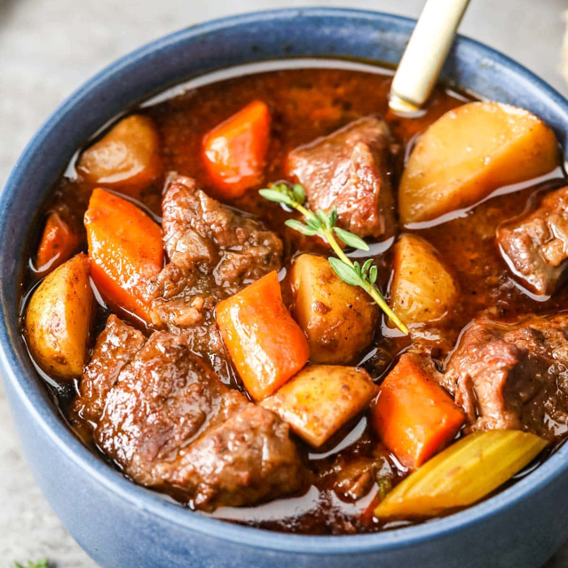

Beef Stew

Why Beef Stew?
If you're considering this recipe, I want you to consider
one thing before making this. How much meat and potatoes
do you want? This is a basic recipe, if you want it to
taste better keep working on your recipe.
Ingredients
- Beef Chuck Roast: As much you would like to eat
- Potatoes: Probably 3 or 4 unless you are making a lot
- Onion: 1
- Carrots: I don't really like that much carrot, maybe 2
- Tomato Paste: Get it in a tube if you can
- Thyme: 1 sprig
- Bay Leaf: Honestly? I put like 5
- Fish Sauce: Give it a healthy splash, if at any point your food
tastes plain, give yourself another splash
- Salt, Pepper, Oil, Water(or stock/flavor water): as needed
Recipe
- Cube your potatoes about 1/2 inch
- Peel and chop your onion literally into any shape, they will taste good. I like cubed (big)
or diced (small) or strips
- Pretend your carrot is a ruler, and chop off pieces like every inch
- Your beef chuck roast can be cut into 1/2-1 inch cubes; alternatively dont cut it
- Pour a nice layer of oil on the bottom of a big pot you'd put stew in
- Salt your BEEF
- Fry up your beef on medium-high heat, to brown the sides, if cubed you can do it in batches.
Just make sure it doesn't burn
- Remove the beef from the heat
- Throw onionsin
- At 75% onion transluency, put about a small spoon of tomato paste in and mix, it can
be 2 smalls spoons too, it doesn't really matter
- After about a minute or 2, before things burn splash a cup of water or (or stock/flavor water if you have it).
this will do something called deglaze the pan and make your water taste good
- Place literally everything you have left back into the pot, fill with water trying to cover
most of the food, maybe 66% up the pot
- Heat on high until water boils, then swap to low for about 1 hour to about 3 hours. Every so often check your
stew to see if things look good. You can add more water if things look like they need more water
The longer your food is cooking the lower it's structural integrity will be. It will be eatable, after 45 minutes
most likely, unless you messed up really badly
- Place the things you cooked into a bowl, and taste it. is it salty enough? Keep adding fish sauce a tiny splash
at a time until it tastes good. I like to eat mine with rice
- Did your bowl get too salty? just pour it back into the big pot and try again